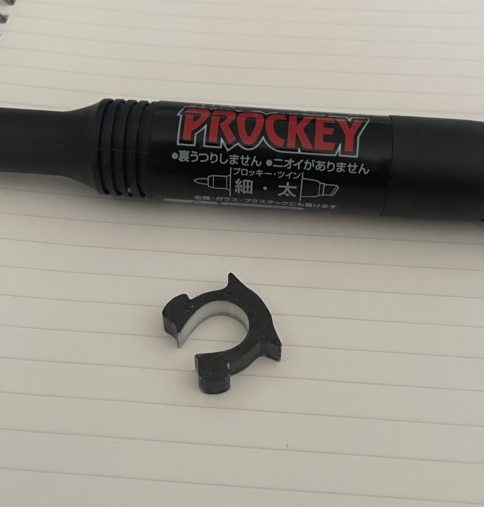

ヘッドフォン型ピンセット

・実用性のあるピンセットを作ろうとも考えたが、何より見た目が可愛い物の方がテンション上がると思い、最近みんながつけているヘッドフォンの形にしたら面白そうだと考えた。
そして出来上がったのがこちら

確かにヘッドホンの形にはなった。
しかし、これ何かと似ている・・・
なんかこれって・・・
そう,
パンの袋を止める「バック・クロージャー」に似ている・・・
どうすれば・・・・・・
そこで高さを変えることにした
比べてみると・・・・・
高さが増えたことで「バック・クロージャー」感が薄れ、少しヘッドフォンの形に近づいた。
もっとヘッドフォンらしくならないか・・・・そう考え、

マッキーで色を塗ってみた。
すると、かなりヘッドフォンらしくなったように思える。
ただし、ピンセットの役目としては使いにくさ１００％であった。
長さが短い、高さがあることにより掴みにくく扱いづらくなった。
けれど